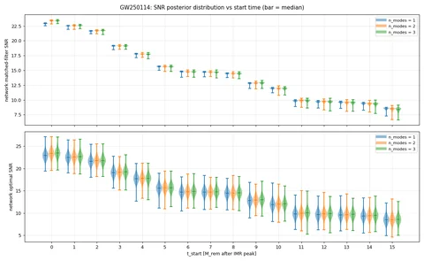
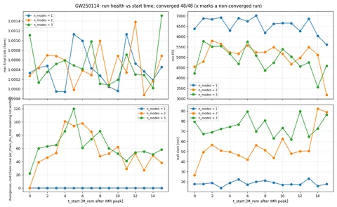

GW250114: ringdown quasinormal-mode fits
Bayesian fits of a sum of damped sinusoids (quasinormal modes) to the ringdown of GW250114 in LIGO Hanford (H1) and Livingston (L1) strain. The grid is n_modes = 1, 2, 3 times start times t_start = 0..15 M_rem after the IMR max-likelihood peak: 48 runs, 48 converged.
Limitation: the passing posterior-coverage test for this prior box used analysis_duration = 0.1 s. This campaign runs at analysis_duration = 0.3 s. No coverage claim is made at 0.3 s.
Mode labels: Stage-3 assignment reports method fallback_mahalanobis with deviation_flag = true for every mode, because the conformal prediction point carries no amplitude or phase (nan) on real data. Labels come from the ranking d_k = sqrt((f_k/f_220 - 1)^2 + ((1/tau_k)/(1/tau_220) - 1)^2) of the QNMs predicted from the IMR remnant posterior.
Conventions: gamma = 1/tau in 1/s; f in Hz; t_start in units of the remnant mass M_rem, measured from the IMR max-likelihood peak. Posteriors use the 4 cold chains of 8 parallel-tempered chains. Amplitudes have no reference value on real data; modes are not ranked by amplitude. Sampler mode indices are EM-classification indices, not QNM labels.
Run table: posterior median with the 90% interval (5th to 95th percentile) as (+upper / -lower). Divergence counts are the raw sampler counter per chain, summed over the cold chains; the exact meaning of the counter is not verified. Where a posterior reaches a prior edge, the figures show the whole prior box.
Settings
| IMR peak GPS time [s] | 1420878141.218905 |
|---|---|
| detectors | H1, L1 |
| reference detector | H1 |
| analysis_duration [s] | 0.3 |
| sample rate [Hz] | 16384 |
| prior f [Hz] | [20, 1024] |
| prior gamma = 1/tau [1/s] | [1, 2500] |
| high-pass | anti-causal 4th-order 20 Hz, on data and PSD |
| PSD | estimated from the strain record |
| IMR max-L remnant mass [M_sun] (frame as stored in the IMR samples) | 67.732 |
| IMR max-L remnant spin | 0.6718 |
| sky position (IMR max-L), ra / dec [rad] | 2.3961 / 0.2925 |
| IMR posterior used for predictions | NRSur7dq4 |
| sampler | Gibbs/WALNUTS, parallel tempering, 4 cold + 4 hot chains |
| runs | 48 (n_modes 1-3 x t_start 0-15 M_rem), one seed each |
Summary figures (2)
{kind=link}

{kind=link}

Groups (3)
All runs (48)
| group | run | status | n_modes | t_start [M_rem] | f_0 [Hz] | gamma_0 [1/s] | network matched-filter SNR | max R-hat | min ESS | divergences, cold chains (raw) | f_1 [Hz] | gamma_1 [1/s] | f_2 [Hz] | gamma_2 [1/s] |
|---|---|---|---|---|---|---|---|---|---|---|---|---|---|---|
| n1 | t0Mf | converged | 1 | 0 | 237.6 (+5.288 / -5.64) | 228.4 (+33.24 / -29.16) | 22.9 (+0.0837 / -0.14) | 1 | 6375 | 0 | ||||
| n1 | t1Mf | converged | 1 | 1 | 245.6 (+5.457 / -5.81) | 224.4 (+35.09 / -30.07) | 22.5 (+0.0802 / -0.141) | 1 | 6868 | 0 | ||||
| n1 | t2Mf | converged | 1 | 2 | 247.7 (+6.316 / -6.706) | 222.3 (+36.92 / -30.11) | 21.6 (+0.0799 / -0.142) | 1 | 6833 | 0 | ||||
| n1 | t3Mf | converged | 1 | 3 | 251.9 (+6.529 / -7.119) | 205.3 (+36.87 / -32.07) | 19.1 (+0.0841 / -0.158) | 0.9999 | 6916 | 0 | ||||
| n1 | t4Mf | converged | 1 | 4 | 249.8 (+7.13 / -7.58) | 223.5 (+45.78 / -37.21) | 17.7 (+0.0785 / -0.173) | 0.9999 | 6294 | 0 | ||||
| n1 | t5Mf | converged | 1 | 5 | 250.2 (+7.156 / -7.55) | 230.2 (+53.69 / -42.68) | 15.6 (+0.084 / -0.195) | 1.001 | 6883 | 0 | ||||
| n1 | t6Mf | converged | 1 | 6 | 249.9 (+7.5 / -7.877) | 233.8 (+56.77 / -47.09) | 14.8 (+0.0874 / -0.207) | 1.001 | 6729 | 0 | ||||
| n1 | t7Mf | converged | 1 | 7 | 252.5 (+8.253 / -8.757) | 240.1 (+62.28 / -49.31) | 14.7 (+0.0873 / -0.206) | 1 | 7008 | 0 | ||||
| n1 | t8Mf | converged | 1 | 8 | 251.4 (+9.693 / -10.93) | 242.5 (+65.11 / -49.74) | 14.5 (+0.0938 / -0.212) | 1 | 6180 | 0 | ||||
| n1 | t9Mf | converged | 1 | 9 | 253.5 (+10.73 / -12.34) | 230.2 (+69.19 / -53.12) | 12.8 (+0.105 / -0.24) | 1 | 6605 | 0 | ||||
| n1 | t10Mf | converged | 1 | 10 | 249.8 (+12.05 / -14.22) | 265.5 (+93.6 / -70.09) | 11.9 (+0.117 / -0.251) | 1 | 6645 | 0 | ||||
| n1 | t11Mf | converged | 1 | 11 | 248.9 (+12.43 / -15.32) | 257.4 (+116.9 / -79.46) | 9.83 (+0.148 / -0.317) | 1.001 | 6643 | 0 | ||||
| n1 | t12Mf | converged | 1 | 12 | 251.4 (+12.44 / -14.83) | 292.5 (+141.6 / -95.4) | 9.69 (+0.152 / -0.323) | 1.001 | 6255 | 0 | ||||
| n1 | t13Mf | converged | 1 | 13 | 256 (+14.28 / -15.99) | 301 (+159.6 / -97.75) | 9.58 (+0.145 / -0.339) | 1 | 6854 | 0 | ||||
| n1 | t14Mf | converged | 1 | 14 | 259.6 (+17.9 / -18.27) | 306.9 (+175.2 / -104.4) | 9.39 (+0.15 / -0.359) | 1 | 6025 | 0 | ||||
| n1 | t15Mf | converged | 1 | 15 | 264.2 (+22.82 / -20.57) | 297.1 (+179.9 / -104.8) | 8.53 (+0.163 / -0.419) | 1 | 5608 | 0 | ||||
| n2 | t0Mf | converged | 2 | 0 | 250.3 (+8.304 / -7.87) | 222.1 (+55.2 / -39.99) | 23.4 (+0.1 / -0.167) | 1 | 4541 | 0 | 216 (+262.6 / -179.6) | 1801 (+635.2 / -982.8) | ||
| n2 | t1Mf | converged | 2 | 1 | 249.4 (+8.754 / -7.782) | 222.3 (+53.05 / -38.36) | 22.6 (+0.105 / -0.163) | 1 | 4793 | 39 | 273.9 (+563.1 / -228.1) | 1625 (+789.6 / -1181) | ||
| n2 | t2Mf | converged | 2 | 2 | 250.3 (+8.12 / -7.83) | 224.2 (+53.18 / -38.42) | 21.7 (+0.113 / -0.17) | 1.001 | 5787 | 46 | 392.5 (+567 / -330.5) | 1792 (+646.5 / -1255) | ||
| n2 | t3Mf | converged | 2 | 3 | 251.4 (+8.064 / -8.662) | 225 (+67.06 / -44.01) | 19.1 (+0.109 / -0.183) | 1.001 | 5641 | 53 | 232.1 (+676.3 / -197) | 1644 (+772.4 / -1265) | ||
| n2 | t4Mf | converged | 2 | 4 | 250.5 (+8.432 / -8.297) | 230.9 (+59.94 / -44.87) | 17.7 (+0.0983 / -0.195) | 1.001 | 5229 | 101 | 345 (+600.7 / -301.6) | 1635 (+784.6 / -1265) | ||
| n2 | t5Mf | converged | 2 | 5 | 250.8 (+8.889 / -9.237) | 237.1 (+68.94 / -50.26) | 15.6 (+0.108 / -0.219) | 1 | 5167 | 94 | 292.3 (+646.9 / -251.3) | 1573 (+839.7 / -1235) | ||
| n2 | t6Mf | converged | 2 | 6 | 251 (+10.18 / -10.31) | 242.3 (+80.67 / -53.89) | 14.8 (+0.119 / -0.235) | 1 | 5570 | 98 | 283.7 (+650.9 / -243.9) | 1605 (+811.5 / -1262) | ||
| n2 | t7Mf | converged | 2 | 7 | 252.2 (+10.16 / -12.57) | 249.3 (+90.96 / -58.59) | 14.7 (+0.112 / -0.232) | 1 | 5234 | 85 | 272.6 (+678.9 / -237.7) | 1595 (+814.6 / -1252) | ||
| n2 | t8Mf | converged | 2 | 8 | 251.8 (+12.36 / -14.35) | 253.6 (+116 / -63.74) | 14.4 (+0.125 / -0.247) | 1.001 | 5242 | 48 | 275.3 (+665.3 / -235.2) | 1500 (+902 / -1127) | ||
| n2 | t9Mf | converged | 2 | 9 | 252.9 (+13.44 / -16.36) | 265.6 (+147.6 / -81.94) | 12.8 (+0.178 / -0.291) | 1 | 5476 | 52 | 209.3 (+717.6 / -179.5) | 1632 (+791.7 / -1240) | ||
| n2 | t10Mf | converged | 2 | 10 | 252 (+15.61 / -16.81) | 276.5 (+142.8 / -89.64) | 11.9 (+0.154 / -0.293) | 1.001 | 5166 | 62 | 267.7 (+650.4 / -227.9) | 1513 (+885.6 / -1169) | ||
| n2 | t11Mf | converged | 2 | 11 | 255.9 (+19.49 / -19.51) | 286.3 (+173 / -105.2) | 9.89 (+0.219 / -0.369) | 1 | 4666 | 29 | 210.6 (+622.9 / -176.4) | 1580 (+833.7 / -1188) | ||
| n2 | t12Mf | converged | 2 | 12 | 256.6 (+20.94 / -19.68) | 302.3 (+181.8 / -111.9) | 9.71 (+0.206 / -0.391) | 1.001 | 4967 | 52 | 290.3 (+614.4 / -249.9) | 1613 (+794.6 / -1203) | ||
| n2 | t13Mf | converged | 2 | 13 | 258.5 (+21.85 / -22.99) | 315.7 (+238.5 / -120.6) | 9.56 (+0.199 / -0.403) | 0.9999 | 5481 | 27 | 307.4 (+619.4 / -267.6) | 1629 (+787 / -1211) | ||
| n2 | t14Mf | converged | 2 | 14 | 260.8 (+23.63 / -28.2) | 324.5 (+293 / -141.5) | 9.35 (+0.212 / -0.437) | 1 | 5112 | 49 | 282 (+647.1 / -246.2) | 1619 (+798.4 / -1254) | ||
| n2 | t15Mf | converged | 2 | 15 | 262.2 (+26.91 / -40.28) | 324.9 (+463.1 / -150.8) | 8.48 (+0.253 / -0.546) | 1.001 | 3178 | 38 | 348 (+582.6 / -309.9) | 1654 (+773 / -1203) | ||
| n3 | t0Mf | converged | 3 | 0 | 250.6 (+8.524 / -7.815) | 224.8 (+58.1 / -41.63) | 23.4 (+0.104 / -0.166) | 1.001 | 4213 | 22 | 195 (+256.7 / -153.8) | 1547 (+867 / -1096) | 340 (+596 / -304.2) | 1940 (+513.6 / -1044) |
| n3 | t1Mf | converged | 3 | 1 | 250.4 (+9.172 / -8.179) | 226.8 (+61.68 / -42.39) | 22.6 (+0.11 / -0.174) | 1 | 5770 | 60 | 428.8 (+532.8 / -389) | 1731 (+691.3 / -1128) | 209.8 (+347.4 / -160.7) | 1597 (+829.5 / -1241) |
| n3 | t2Mf | converged | 3 | 2 | 251.3 (+9.388 / -8.628) | 230.3 (+67.07 / -45.75) | 21.7 (+0.108 / -0.179) | 1 | 5508 | 63 | 248 (+548.1 / -207.9) | 1380 (+999.2 / -1028) | 434.9 (+532.6 / -379.3) | 2024 (+427 / -895.6) |
| n3 | t3Mf | converged | 3 | 3 | 251.3 (+8.948 / -9.591) | 235.5 (+72.04 / -49.58) | 19.1 (+0.116 / -0.196) | 1.001 | 5539 | 65 | 180.2 (+413.5 / -146.3) | 1428 (+969.4 / -1090) | 416.7 (+549 / -372.6) | 1868 (+578.9 / -1180) |
| n3 | t4Mf | converged | 3 | 4 | 251.2 (+9.6 / -9.605) | 238.4 (+79.43 / -50.97) | 17.7 (+0.115 / -0.218) | 1.001 | 5164 | 86 | 235.7 (+502.3 / -199.3) | 1328 (+1038 / -1041) | 466.4 (+510.6 / -411.2) | 1944 (+504.9 / -1078) |
| n3 | t5Mf | converged | 3 | 5 | 251.6 (+10.65 / -10.95) | 244.7 (+83.76 / -56.78) | 15.6 (+0.127 / -0.236) | 1 | 4674 | 120 | 197.7 (+460.3 / -162.5) | 1355 (+1026 / -1063) | 471.4 (+501.7 / -422.7) | 1869 (+576.9 / -1202) |
| n3 | t6Mf | converged | 3 | 6 | 251.7 (+12.54 / -12.53) | 253.2 (+104.8 / -62.03) | 14.7 (+0.139 / -0.253) | 1 | 5741 | 61 | 191.1 (+483.2 / -156.5) | 1321 (+1041 / -1007) | 449.6 (+528.7 / -404.2) | 1863 (+584.8 / -1181) |
| n3 | t7Mf | converged | 3 | 7 | 252.2 (+12.76 / -14.17) | 258.4 (+115.9 / -69.51) | 14.7 (+0.139 / -0.257) | 1.001 | 5086 | 74 | 181.8 (+463.5 / -149.5) | 1370 (+1010 / -1068) | 455.1 (+521.7 / -406.5) | 1849 (+599.1 / -1245) |
| n3 | t8Mf | converged | 3 | 8 | 252.8 (+15 / -15.78) | 269.4 (+141.4 / -83.41) | 14.4 (+0.155 / -0.266) | 1 | 4362 | 86 | 185.1 (+486.7 / -150.7) | 1387 (+989.3 / -1040) | 446.8 (+532.8 / -398.5) | 1867 (+574.8 / -1158) |
| n3 | t9Mf | converged | 3 | 9 | 254.3 (+17.69 / -18.99) | 286.1 (+175.5 / -98.31) | 12.9 (+0.217 / -0.321) | 1 | 4730 | 60 | 165.7 (+439.6 / -135.5) | 1521 (+896.5 / -1130) | 434.1 (+534 / -392.7) | 1888 (+552.7 / -1227) |
| n3 | t10Mf | converged | 3 | 10 | 254.9 (+19.29 / -19.15) | 287.4 (+174.9 / -106.8) | 11.9 (+0.184 / -0.341) | 1 | 5384 | 52 | 183 (+396.2 / -149.6) | 1390 (+985.4 / -1034) | 458.1 (+511.4 / -405.2) | 1843 (+596.9 / -1215) |
| n3 | t11Mf | converged | 3 | 11 | 258.2 (+21.51 / -21.63) | 301.8 (+211.5 / -118.7) | 9.89 (+0.227 / -0.399) | 1.001 | 5029 | 41 | 162.2 (+349.7 / -129.7) | 1491 (+910.8 / -1091) | 393.6 (+559.8 / -348.5) | 1831 (+608.1 / -1190) |
| n3 | t12Mf | converged | 3 | 12 | 259.4 (+24.79 / -22.79) | 312.1 (+236 / -126.2) | 9.69 (+0.244 / -0.414) | 1 | 4555 | 54 | 210.7 (+434.2 / -175.4) | 1473 (+913.2 / -1058) | 484.8 (+483 / -431.3) | 1845 (+601.2 / -1291) |
| n3 | t13Mf | converged | 3 | 13 | 260.1 (+26.87 / -40.82) | 341 (+434.8 / -157) | 9.53 (+0.254 / -0.495) | 1 | 4740 | 55 | 205.9 (+447.2 / -173.7) | 1514 (+884.6 / -1112) | 438.4 (+526.3 / -388.7) | 1841 (+598.5 / -1193) |
| n3 | t14Mf | converged | 3 | 14 | 261.3 (+30.51 / -45.82) | 354.2 (+516.2 / -175.3) | 9.31 (+0.269 / -0.52) | 1 | 3550 | 51 | 189.3 (+451.3 / -158.6) | 1442 (+941.9 / -1067) | 440 (+526.4 / -395.8) | 1879 (+564 / -1178) |
| n3 | t15Mf | converged | 3 | 15 | 260.4 (+38.25 / -114.3) | 379.6 (+773.6 / -205.7) | 8.41 (+0.333 / -0.678) | 1.002 | 4585 | 58 | 241.2 (+520.9 / -206.8) | 1284 (+1064 / -960.8) | 404.8 (+554.4 / -355.7) | 1984 (+466.8 / -953.2) |